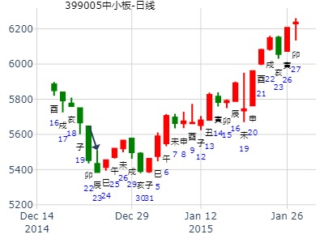

手摇卦000815美利云下周13-17涨跌
公历时间：2020年1月12日7时17分 农历时间：己亥年 十二月十八日辰时
干 支：己亥年 丁丑月 甲寅日 戊辰时
旬 空：辰巳 申酉 子丑 戌亥
神 煞：驿马─申 桃花─卯 日禄─寅 贵人─丑，未
中国预测网纳甲六爻排盘
乾宫：天风姤 乾宫：乾为天（六冲）
六神 伏 神 【本 卦】 【变 卦】
玄武 ▄▄▄▄▄ 父母壬戌土 ▄▄▄▄▄ 父母壬戌土 世
白虎 ▄▄▄▄▄ 兄弟壬申金 ▄▄▄▄▄ 兄弟壬申金
螣蛇 ▄▄▄▄▄ 官鬼壬午火 应 ▄▄▄▄▄ 官鬼壬午火
勾陈 ▄▄▄▄▄ 兄弟辛酉金 ▄▄▄▄▄ 父母甲辰土 应
朱雀 妻财甲寅木 ▄▄▄▄▄ 子孙辛亥水 ▄▄▄▄▄ 妻财甲寅木
青龙 ▄▄ ▄▄ 父母辛丑土 世× ▄▄▄▄▄ 子孙甲子水
周二明天涨跌
公历时间：2021年1月18日17时35分
干 支：庚子年 己丑月 丙寅日 丁酉时
旬 空：辰巳 午未 戌亥 辰巳
神 煞：驿马─申 桃花─卯 日禄─巳 贵人─酉，亥
中国预测网纳甲六爻排盘
乾宫：天风姤 乾宫：乾为天（六冲）
六神 伏 神 【本 卦】 【变 卦】
青龙 ▄▄▄▄▄ 父母壬戌土 ▄▄▄▄▄ 父母壬戌土 世
玄武 ▄▄▄▄▄ 兄弟壬申金 ▄▄▄▄▄ 兄弟壬申金
白虎 ▄▄▄▄▄ 官鬼壬午火 应 ▄▄▄▄▄ 官鬼壬午火
螣蛇 ▄▄▄▄▄ 兄弟辛酉金 ▄▄▄▄▄ 父母甲辰土 应
勾陈 妻财甲寅木 ▄▄▄▄▄ 子孙辛亥水 ▄▄▄▄▄ 妻财甲寅木
朱雀 ▄▄ ▄▄ 父母辛丑土 世× ▄▄▄▄▄ 子孙甲子水
姤之乾占事：600320振华重工2015年走势？
硬币卦。于海南医学院内摇出。
公历起卦时间：2015年1月23日9时34分
干支：甲午年 丁丑月 己亥日 己巳时 （日空：辰巳）
神煞：驿马－巳 桃花－子 日禄－午 贵人－子，申
乾宫：天风姤 乾宫：乾为天 (六冲)
六神 伏神 本 卦 变 卦
勾陈 父母壬戌土 ▅▅▅▅▅ 父母壬戌土 ▅▅▅▅▅ 世
朱雀 兄弟壬申金 ▅▅▅▅▅ 兄弟壬申金 ▅▅▅▅▅
青龙 官鬼壬午火 ▅▅▅▅▅ 应 官鬼壬午火 ▅▅▅▅▅
玄武 兄弟辛酉金 ▅▅▅▅▅ 父母甲辰土 ▅▅▅▅▅ 应
白虎 妻财甲寅木 子孙辛亥水 ▅▅▅▅▅ 妻财甲寅木 ▅▅▅▅▅
腾蛇 父母辛丑土 ▅▅ ▅▅ 世 ╳→ 子孙甲子水 ▅▅▅▅▅
（可视为测长应短，应急事，直接开跌）
丑月父母值月，论父发动。跌。
实际寅月丑日跌到最低点。
?
试测紫光国微何时涨停？
公历起卦时间：2021年2月2日14时6分 (电脑自动)
干支：庚子年 己丑月 辛巳日 乙未时 （日空：申酉）
神煞：驿马－亥 桃花－午 日禄－酉 贵人－寅，午
乾宫：天风姤 乾宫：乾为天 (六冲)
六神 伏神 本 卦 变 卦
螣蛇 父母壬戌土 ▅▅▅▅▅ 父母壬戌土 ▅▅▅▅▅ 世
勾陈 兄弟壬申金 ▅▅▅▅▅ 兄弟壬申金 ▅▅▅▅▅
朱雀 官鬼壬午火 ▅▅▅▅▅ 应 官鬼壬午火 ▅▅▅▅▅
青龙 兄弟辛酉金 ▅▅▅▅▅ 父母甲辰土 ▅▅▅▅▅ 应
玄武 妻财甲寅木 子孙辛亥水 ▅▅▅▅▅ 妻财甲寅木 ▅▅▅▅▅
白虎 父母辛丑土 ▅▅ ▅▅ 世 ╳→ 子孙甲子水 ▅▅▅▅▅
18，为信群中的风生水起老师
公历时间：2022年2月4日7时58分
农历时间：壬寅年 正月初四日辰时
干 支：壬寅年 壬寅月 戊子日 丙辰时
旬 空：辰巳 辰巳 午未 子丑
神 煞：驿马─寅 桃花─酉 日禄─巳 贵人─丑，未
中国预测网纳甲六爻排盘
乾宫：天风姤 乾宫：乾为天（六冲）
六神 伏 神 【本 卦】 【变 卦】
朱雀 ▄▄▄▄▄ 父母壬戌土 ▄▄▄▄▄ 父母壬戌土 世
青龙 ▄▄▄▄▄ 兄弟壬申金 ▄▄▄▄▄ 兄弟壬申金
玄武 ▄▄▄▄▄ 官鬼壬午火 应 ▄▄▄▄▄ 官鬼壬午火
白虎 ▄▄▄▄▄ 兄弟辛酉金 ▄▄▄▄▄ 父母甲辰土 应
螣蛇 妻财甲寅木 ▄▄▄▄▄ 子孙辛亥水 ▄▄▄▄▄ 妻财甲寅木
勾陈 ▄▄ ▄▄ 父母辛丑土 世× ▄▄▄▄▄ 子孙甲子水

辛丑 庚寅 丁酉 乙巳 (辰巳空) 辛丑年正月初七(2021/02/18 09:25:00)
天风姤 乾为天
青龙 父母戌土 ／ 父母戌土 ／ 世
玄武 兄弟申金 ／ 兄弟申金 ／
白虎 官鬼午火 ／ 应 官鬼午火 ／
腾蛇 兄弟酉金 ／ 父母辰土 ／ 应
妻财寅木：勾陈 子孙亥水 ／ 妻财寅木 ／
朱雀 父母丑土 × 世 子孙子水 ／
----------------------------
辛丑 庚寅 戊戌 丁巳 (辰巳空) 辛丑年正月初八(2021/02/19 09:25:00)
泽水困 泽风大过
朱雀 父母未土 ∥ 父母未土 ∥
青龙 兄弟酉金 ／ 兄弟酉金 ／
玄武 子孙亥水 ／ 应 子孙亥水 ／ 世
白虎 官鬼午火 × 兄弟酉金 ／
腾蛇 父母辰土 ／ 子孙亥水 ／
勾陈 妻财寅木 ∥ 世 父母丑土 ∥ 应
姤之乾_002150
占事: 通润装备未来几个月
时间: 2022-04-22
干支: 壬寅年甲辰月乙巳日壬午时 (旬空: 寅卯 )
天风姤 乾为天
六神 伏神 本 卦 变 卦
玄武 ▅▅▅▅▅ 父母戌土 ▅▅▅▅▅ 父母戌土 世
白虎 ▅▅▅▅▅ 兄弟申金 ▅▅▅▅▅ 兄弟申金
腾蛇 ▅▅▅▅▅ 官鬼午火 应 ▅▅▅▅▅ 官鬼午火
勾陈 ▅▅▅▅▅ 兄弟酉金 ▅▅▅▅▅ 父母辰土 应
朱雀 妻财寅木▅▅▅▅▅ 子孙亥水 ▅▅▅▅▅ 妻财寅木
青龙 ▅▅ ▅▅ 父母丑土 世Ｘ→ ▅▅▅▅▅ 子孙子水
516航天长峰5.19壬戌与5.22乙丑哪日顶？
公历起卦时间：2020年5月16日14时8分 (电脑自动)
干支：庚子年 辛巳月 己未日 辛未时 （日空：子丑）
神煞：驿马－巳 桃花－子 日禄－午 贵人－子，申
乾宫：天风姤 乾宫：乾为天 (六冲)
六神 伏神 本 卦 变 卦
勾陈 父母壬戌土 ▅▅▅▅▅ 父母壬戌土 ▅▅▅▅▅ 世
朱雀 兄弟壬申金 ▅▅▅▅▅ 兄弟壬申金 ▅▅▅▅▅
青龙 官鬼壬午火 ▅▅▅▅▅ 应 官鬼壬午火 ▅▅▅▅▅
玄武 兄弟辛酉金 ▅▅▅▅▅ 父母甲辰土 ▅▅▅▅▅ 应
白虎 妻财甲寅木 子孙辛亥水 ▅▅▅▅▅ 妻财甲寅木 ▅▅▅▅▅
螣蛇 父母辛丑土 ▅▅ ▅▅ 世 ╳→ 子孙甲子水 ▅▅▅▅▅
测5.26航天长峰顶部相对于17.82收盘价走势状态？
公历起卦时间：2020年5月17日9时23分 (电脑自动)
干支：庚子年 辛巳月 庚申日 辛巳时 （日空：子丑）
神煞：驿马－寅 桃花－酉 日禄－申 贵人－丑，未
乾宫：天风姤 乾宫：乾为天 (六冲)
六神 伏神 本 卦 变 卦
螣蛇 父母壬戌土 ▅▅▅▅▅ 父母壬戌土 ▅▅▅▅▅ 世
勾陈 兄弟壬申金 ▅▅▅▅▅ 兄弟壬申金 ▅▅▅▅▅
朱雀 官鬼壬午火 ▅▅▅▅▅ 应 官鬼壬午火 ▅▅▅▅▅
青龙 兄弟辛酉金 ▅▅▅▅▅ 父母甲辰土 ▅▅▅▅▅ 应
玄武 妻财甲寅木 子孙辛亥水 ▅▅▅▅▅ 妻财甲寅木 ▅▅▅▅▅
白虎 父母辛丑土 ▅▅ ▅▅ 世 ╳→ 子孙甲子水 ▅▅▅▅▅
占事：6月15日前大盘安全否？(011-111硬币卦)
公历起卦时间：2015年5月27日9时16分
干支：乙未年 辛巳月 癸卯日 丁巳时 （日空：辰巳）
乾宫：天风姤 乾宫：乾为天 (六冲)
六神 伏神 本 卦 变 卦
白虎 父母壬戌土 ▅▅▅▅▅ 父母壬戌土 ▅▅▅▅▅ 世
腾蛇 兄弟壬申金 ▅▅▅▅▅ 兄弟壬申金 ▅▅▅▅▅
勾陈 官鬼壬午火 ▅▅▅▅▅ 应 官鬼壬午火 ▅▅▅▅▅
朱雀 兄弟辛酉金 ▅▅▅▅▅ 父母甲辰土 ▅▅▅▅▅ 应
青龙 妻财甲寅木 子孙辛亥水 ▅▅▅▅▅ 妻财甲寅木 ▅▅▅▅▅
玄武 父母辛丑土 ▅▅ ▅▅ 世 ╳→ 子孙甲子水 ▅▅▅▅▅
晕。卯日冲酉，按朱辰彬理论有动爻丑土生，即为旺，逢冲为暗动
(暗动为速，故隔天就暴跌）
辰日又是动而逢合的应期，又是墓子孙子水的应期，大跌。
丑化子，丑旺则论发动。亥水子孙月破。
演申到下周：
申酉亥子能涨。戌要跌。
下下周：卯涨，辰跌，巳跌，午跌，未（不一定）可能冲开丑。也可能助丑克子孙。
教训：因个股组合中卯日涨停太多，反而以为辰日不一定大跌，只是盘中调整而巳。却没看
到辰巳在一起。
天时章： 巽之姤合绊被冲，【合绊逢日冲直接用值日】姤之乾，天雷无妄静卦暗动动而逢
合。父化子丑化子。未日冲丑时天晴。
参考： 姤之乾。父化子。丑化子。 测上证12月大盘走势。
占问事宜：000541佛山照明怎么走向
公历：2015年6月26日12时58分，星期五。
干支：乙未年 壬午月 癸酉日 戊午时 (卦身：午)
主变卦 天风姤(乾宫) 之 乾为天(乾宫) [空亡:戌、亥]
白虎 ▅▅▅▅▅ 父母壬戌土 ▅▅▅▅▅ 父母壬戌土 世
螣蛇 ▅▅▅▅▅ 兄弟壬申金 ▅▅▅▅▅ 兄弟壬申金
勾陈 ▅▅▅▅▅ 官鬼壬午火 应 ▅▅▅▅▅ 官鬼壬午火
朱雀 ▅▅▅▅▅ 兄弟辛酉金 ▅▅▅▅▅ 父母甲辰土 应
青龙 妻财甲寅木 ▅▅▅▅▅ 子孙辛亥水 ▅▅▅▅▅ 妻财甲寅木
玄武 ▅▅ ▅▅×父母辛丑土 世 ▅▅▅▅▅ 子孙甲子水
占事：7.4一上证收盘走势？
公历起卦时间：2022年7月2日14时48分 (电脑自动)
干支：壬寅年 丙午月 丙辰日 乙未时 （日空：子丑）
神煞：驿马－寅 桃花－酉 日禄－巳 贵人－酉，亥
乾宫：天风姤 乾宫：乾为天 (六冲)
六神 伏神 本 卦 变 卦
青龙 父母壬戌土 ▅▅▅▅▅ 父母壬戌土 ▅▅▅▅▅ 世
玄武 兄弟壬申金 ▅▅▅▅▅ 兄弟壬申金 ▅▅▅▅▅
白虎 官鬼壬午火 ▅▅▅▅▅ 应 官鬼壬午火 ▅▅▅▅▅
螣蛇 兄弟辛酉金 ▅▅▅▅▅ 父母甲辰土 ▅▅▅▅▅ 应
勾陈 妻财甲寅木 子孙辛亥水 ▅▅▅▅▅ 妻财甲寅木 ▅▅▅▅▅
朱雀 父母辛丑土 ▅▅ ▅▅ 世 ╳→ 子孙甲子水 ▅▅▅▅▅
风生水起 占事：大盘到年底
公历时间：2015年7月13日17时55分
干 支：乙未年 癸未月 庚寅日 乙酉时
旬 空：辰巳 申酉 (午未) 午未
乾宫：天风姤 乾宫：乾为天（六冲）
六神 伏 神 【本 卦】 【变 卦】
螣蛇 ▄▄▄▄▄ 父母壬戌土 ▄▄▄▄▄ 父母壬戌土 世
勾陈 ▄▄▄▄▄ 兄弟壬申金 ▄▄▄▄▄ 兄弟壬申金
朱雀 ▄▄▄▄▄ 官鬼壬午火 应 ▄▄▄▄▄ 官鬼壬午火
青龙 ▄▄▄▄▄ 兄弟辛酉金 ▄▄▄▄▄ 父母甲辰土 应
玄武 妻财甲寅木 ▄▄▄▄▄ 子孙辛亥水 ▄▄▄▄▄ 妻财甲寅木
白虎 ▄▄ ▄▄ 父母辛丑土 世X-> ▄▄▄▄▄ 子孙甲子水
上证7.13丁卯三 -7.15己巳五哪日底？-
公历起卦时间：2022年7月14日6时1分 (电脑自动)
干支：壬寅年 丁未月 戊辰日 乙卯时 （日空：戌亥）
神煞：驿马－寅 桃花－酉 日禄－巳 贵人－丑，未
乾宫：天风姤 乾宫：乾为天 (六冲)
六神 伏神 本 卦 变 卦
朱雀 父母壬戌土 ▅▅▅▅▅ 父母壬戌土 ▅▅▅▅▅ 世
青龙 兄弟壬申金 ▅▅▅▅▅ 兄弟壬申金 ▅▅▅▅▅
玄武 官鬼壬午火 ▅▅▅▅▅ 应 官鬼壬午火 ▅▅▅▅▅
白虎 兄弟辛酉金 ▅▅▅▅▅ 父母甲辰土 ▅▅▅▅▅ 应
螣蛇 妻财甲寅木 子孙辛亥水 ▅▅▅▅▅ 妻财甲寅木 ▅▅▅▅▅
勾陈 父母辛丑土 ▅▅ ▅▅ 世 ╳→ 子孙甲子水 ▅▅▅▅▅
7月17日大盘升跌
公历起卦时间：2015年7月16日22时30分 (电脑自动)
乾宫：天风姤 乾宫：乾为天 (六冲)
六神 伏神 本 卦 变 卦
白虎 父母壬戌土 ▅▅▅▅▅ 父母壬戌土 ▅▅▅▅▅ 世
腾蛇 兄弟壬申金 ▅▅▅▅▅ 兄弟壬申金 ▅▅▅▅▅
勾陈 官鬼壬午火 ▅▅▅▅▅ 应 官鬼壬午火 ▅▅▅▅▅
朱雀 兄弟辛酉金 ▅▅▅▅▅ 父母甲辰土 ▅▅▅▅▅ 应
青龙 妻财甲寅木 子孙辛亥水 ▅▅▅▅▅ 妻财甲寅木 ▅▅▅▅▅
玄武 父母辛丑土 ▅▅ ▅▅ 世 ╳→ 子孙甲子水 ▅▅▅▅▅
多方占上风，涨。
占事：600558大西洋7月27日下午涨跌
公历起卦时间：2015年7月27日11时32分 (电脑自动)
干支：乙未年 癸未月 甲辰日 庚午时 （日空：寅卯）
神煞：驿马－寅 桃花－酉 日禄－寅 贵人－丑，未
乾宫：天风姤 乾宫：乾为天 (六冲)
六神 伏神 本 卦 变 卦
玄武 父母壬戌土 ▅▅▅▅▅ 父母壬戌土 ▅▅▅▅▅ 世
白虎 兄弟壬申金 ▅▅▅▅▅ 兄弟壬申金 ▅▅▅▅▅
腾蛇 官鬼壬午火 ▅▅▅▅▅ 应 官鬼壬午火 ▅▅▅▅▅
勾陈 兄弟辛酉金 ▅▅▅▅▅ 父母甲辰土 ▅▅▅▅▅ 应
朱雀 妻财甲寅木 子孙辛亥水 ▅▅▅▅▅ 妻财甲寅木 ▅▅▅▅▅
青龙 父母辛丑土 ▅▅ ▅▅ 世 ╳→ 子孙甲子水 ▅▅▅▅▅
《周易》——天风诟 乾上巽下
姤之乾,上证未来二周
时间: 2022-8-25
干支: 壬寅年戊申月庚戌日 (旬空: 寅卯 )
天风姤 乾为天
六神 伏神 本 卦 变 卦
腾蛇 ▅▅▅▅▅ 父母戌土 ▅▅▅▅▅ 父母戌土 世
勾陈 ▅▅▅▅▅ 兄弟申金 ▅▅▅▅▅ 兄弟申金
朱雀 ▅▅▅▅▅ 官鬼午火 应 ▅▅▅▅▅ 官鬼午火
青龙 ▅▅▅▅▅ 兄弟酉金 ▅▅▅▅▅ 父母辰土 应
玄武 妻财寅木▅▅▅▅▅ 子孙亥水 ▅▅▅▅▅ 妻财寅木
白虎 ▅▅ ▅▅ 父母丑土 世Ｘ→ ▅▅▅▅▅ 子孙子水
占事：002574明牌珠宝下午跟明天涨跌
公历起卦时间：2014年8月26日11时34分 (电脑自动)
干支：甲午年 壬申月 己巳日 庚午时 （日空：戌亥）
神煞：驿马－亥 桃花－午 日禄－午 贵人－子，申
乾宫：天风姤 乾宫：乾为天 (六冲)
六神 伏神 本 卦 变 卦
勾陈 父母壬戌土 ▅▅▅▅▅ 父母壬戌土 ▅▅▅▅▅ 世
朱雀 兄弟壬申金 ▅▅▅▅▅ 兄弟壬申金 ▅▅▅▅▅
青龙 官鬼壬午火 ▅▅▅▅▅ 应 官鬼壬午火 ▅▅▅▅▅
玄武 兄弟辛酉金 ▅▅▅▅▅ 父母甲辰土 ▅▅▅▅▅ 应
白虎 妻财甲寅木 子孙辛亥水 ▅▅▅▅▅ 妻财甲寅木 ▅▅▅▅▅
腾蛇 父母辛丑土 ▅▅ ▅▅ 世 ╳→ 子孙甲子水 ▅▅▅▅▅
姤之乾_002346_柘中股份_2014-09-03_近期走势
占事：近期走势
时间: 2014-09-03 22时13分
干支: 甲午年壬申月丁丑日 (旬空: 申酉 )
天风姤 乾为天
六神 伏神 本 卦 变 卦
青龙 ▅▅▅▅▅ 父母戌土 ▅▅▅▅▅ 父母戌土 世
玄武 ▅▅▅▅▅ 兄弟申金 ▅▅▅▅▅ 兄弟申金
白虎 ▅▅▅▅▅ 官鬼午火 应 ▅▅▅▅▅ 官鬼午火
腾蛇 ▅▅▅▅▅ 兄弟酉金 ▅▅▅▅▅ 父母辰土 应
勾陈 妻财寅木▅▅▅▅▅ 子孙亥水 ▅▅▅▅▅ 妻财寅木
朱雀 ▅▅ ▅▅ 父母丑土 世Ｘ→ ▅▅▅▅▅ 子孙子水
寅日出伏，涨停。
卯日助财，但同时冲酉兄暗动，冲高回落。
未日墓财，跌。
姤之乾
占事: 603339未来二周
时间: 2021-9-3
干支: 辛丑年丙申月甲寅日戊辰时 (旬空: 子丑 )
天风姤 乾为天
六神 伏神 本 卦 变 卦
玄武 ▅▅▅▅▅ 父母戌土 ▅▅▅▅▅ 父母戌土 世
白虎 ▅▅▅▅▅ 兄弟申金 ▅▅▅▅▅ 兄弟申金
腾蛇 ▅▅▅▅▅ 官鬼午火 应 ▅▅▅▅▅ 官鬼午火
勾陈 ▅▅▅▅▅ 兄弟酉金 ▅▅▅▅▅ 父母辰土 应
朱雀 妻财寅木▅▅▅▅▅ 子孙亥水 ▅▅▅▅▅ 妻财寅木
青龙 ▅▅ ▅▅ 父母丑土 世Ｘ→ ▅▅▅▅▅ 子孙子水
源文件名:四方科技903周卦。姤之乾。 000400.晋之未济。
9月13日---17日：上证指数运行趋势
公历时间：2010年9月10日19时33分
干支：庚寅年 乙酉月 癸亥日 壬戌时
旬空：午未 午未 子丑 子丑
神煞：驿马─巳 桃花─子 日禄─子 贵人─巳，卯
乾宫：天风姤 乾宫：乾为天（六冲）
六神 伏 神 【本 卦】 【变 卦】
白虎 ▄▄▄▄▄ 父母壬戌土 ▄▄▄▄▄ 父母壬戌土 世
螣蛇 ▄▄▄▄▄ 兄弟壬申金 ▄▄▄▄▄ 兄弟壬申金
勾陈 ▄▄▄▄▄ 官鬼壬午火 应 ▄▄▄▄▄ 官鬼壬午火
朱雀 ▄▄▄▄▄ 兄弟辛酉金 ▄▄▄▄▄ 父母甲辰土 应
青龙 妻财甲寅木 ▄▄▄▄▄ 子孙辛亥水 ▄▄▄▄▄ 妻财甲寅木
玄武 ▄▄ ▄▄ 父母辛丑土 世X-> ▄▄▄▄▄ 子孙甲子水
判断：
父母发用，虽然化出子孙，子孙正待出空，显示砸盘后略有拉回而已，整体拖累大盘信息已经出现，不利上行，趋势下跌；过程中一度有跌破2600点的可能。
[原创]每日预测深沪两市大盘指数
公历时间：2007年10月11日9时30分 星期四
干支：丁亥年 庚戌月 戊寅日 丁巳时 (旬空：申酉)
神煞：驿马—申 桃花—卯 日禄—巳 贵人—丑，未
乾宫：天风姤 乾宫：乾为天（六冲）
六神 伏 神 【本 卦】 【变 卦】
朱雀 ▅▅▅▅▅ 父母壬戌土 ▅▅▅▅▅ 父母壬戌土 世
青龙 ▅▅▅▅▅ 兄弟壬申金 ▅▅▅▅▅ 兄弟壬申金
玄武 ▅▅▅▅▅ 官鬼壬午火 应 ▅▅▅▅▅ 官鬼壬午火
白虎 ▅▅▅▅▅ 兄弟辛酉金 ▅▅▅▅▅ 父母甲辰土 应
螣蛇 妻财甲寅木 ▅▅▅▅▅ 子孙辛亥水 ▅▅▅▅▅ 妻财甲寅木
勾陈 ▅▅ ▅▅ 父母辛丑土 世×→ ▅▅▅▅▅ 子孙甲子水
占事：600072 何时启动 起卦方式：手动摇卦
公历时间：2011年10月26日17时2分
干 支：辛卯年 戊戌月 甲寅日 癸酉时
旬 空：午未 辰巳 (子丑) 戌亥
乾宫：天风姤 乾宫：乾为天（六冲）
六神 伏 神 【本 卦】 【变 卦】
玄武 ▄▄▄▄▄ 父母壬戌土 ▄▄▄▄▄ 父母壬戌土 世
白虎 ▄▄▄▄▄ 兄弟壬申金 ▄▄▄▄▄ 兄弟壬申金
螣蛇 ▄▄▄▄▄ 官鬼壬午火 应 ▄▄▄▄▄ 官鬼壬午火
勾陈 ▄▄▄▄▄ 兄弟辛酉金 ▄▄▄▄▄ 父母甲辰土 应
朱雀 妻财甲寅木 ▄▄▄▄▄ 子孙辛亥水 ▄▄▄▄▄ 妻财甲寅木
青龙 ▄▄ ▄▄ 父母辛丑土 世X> ▄▄▄▄▄ 子孙甲子水
初六：系于金柅，贞吉，有攸往，见凶，羸豕踟躅。
象曰：系于金柅，柔道牵也。
融捷股份002192,因走势具备中线基础，见其涨停，发起上涨启动信号，故测之，依心念即时起得卦为：
公历起卦时间：2019年11月27日21时34分 (按
干支：己亥年 乙亥月 戊辰日 癸亥时 （日空：戌亥）
神煞：驿马－寅 桃花－酉 日禄－巳 贵人－丑，未
乾宫：天风姤 乾宫：乾为天 (六冲)
六神 伏神 本 卦 变 卦
朱雀 父母壬戌土 ▅▅▅▅▅ 父母壬戌土 ▅▅▅▅▅ 世
青龙 兄弟壬申金 ▅▅▅▅▅ 兄弟壬申金 ▅▅▅▅▅
玄武 官鬼壬午火 ▅▅▅▅▅ 应 官鬼壬午火 ▅▅▅▅▅
白虎 兄弟辛酉金 ▅▅▅▅▅ 父母甲辰土 ▅▅▅▅▅ 应
腾蛇 妻财甲寅木 子孙辛亥水 ▅▅▅▅▅ 妻财甲寅木 ▅▅▅▅▅
勾陈 父母辛丑土 ▅▅ ▅▅ 世 ╳→ 子孙甲子水 ▅▅▅▅▅
姤之乾。父化子。丑化子。 测上证12月大盘走势。
公历起卦时间：2011年12月2日13时55分 (手工指定)
干支：辛卯年 己亥月 辛卯日 乙未时 （日空：午未）
乾宫：天风姤 乾宫：乾为天 (六冲)
六神 伏神 本 卦 变 卦
腾蛇 父母壬戌土 ▅▅▅▅▅ 父母壬戌土 ▅▅▅▅▅ 世
勾陈 兄弟壬申金 ▅▅▅▅▅ 兄弟壬申金 ▅▅▅▅▅
朱雀 官鬼壬午火 ▅▅▅▅▅ 应 官鬼壬午火 ▅▅▅▅▅
青龙 兄弟辛酉金 ▅▅▅▅▅ 父母甲辰土 ▅▅▅▅▅ 应
玄武 妻财甲寅木 子孙辛亥水 ▅▅▅▅▅ 妻财甲寅木 ▅▅▅▅▅
白虎 父母辛丑土 ▅▅ ▅▅ 世 ╳→ 子孙甲子水 ▅▅▅▅▅
虽是子值月，财值日，照样跌
（又逢丑动爻生酉金时，逢卯冲算暗动，则父兄同动克财，一路跌）
丑大跌，辰大跌，戌大跌。申酉亥子日小涨。
恒瑞医药12.17五-12.24丙午五哪日顶？
公历起卦时间：2021年12月20日9时13分 (电脑自动)
干支：辛丑年 庚子月 壬寅日 乙巳时 （日空：辰巳）
神煞：驿马－申 桃花－卯 日禄－亥 贵人－卯，巳
乾宫：天风姤 乾宫：乾为天 (六冲)
六神 伏神 本 卦 变 卦
白虎 父母壬戌土 ▅▅▅▅▅ 父母壬戌土 ▅▅▅▅▅ 世
螣蛇 兄弟壬申金 ▅▅▅▅▅ 兄弟壬申金 ▅▅▅▅▅
勾陈 官鬼壬午火 ▅▅▅▅▅ 应 官鬼壬午火 ▅▅▅▅▅
朱雀 兄弟辛酉金 ▅▅▅▅▅ 父母甲辰土 ▅▅▅▅▅ 应
青龙 妻财甲寅木 子孙辛亥水 ▅▅▅▅▅ 妻财甲寅木 ▅▅▅▅▅
玄武 父母辛丑土 ▅▅ ▅▅ 世 ╳→ 子孙甲子水 ▅▅▅▅▅
安圆圆
占事：一月的399005 中小板股走势如何
公历起卦时间：2014年12月23日14时32分 (电脑自动)
干支：甲午年 丙子月 戊辰日 己未时 （日空：戌亥）
乾宫：天风姤 乾宫：乾为天 (六冲)
六神 伏神 本 卦 变 卦
朱雀 父母壬戌土 ▅▅▅▅▅ 父母壬戌土 ▅▅▅▅▅ 世
青龙 兄弟壬申金 ▅▅▅▅▅ 兄弟壬申金 ▅▅▅▅▅
玄武 官鬼壬午火 ▅▅▅▅▅ 应 官鬼壬午火 ▅▅▅▅▅
白虎 兄弟辛酉金 ▅▅▅▅▅ 父母甲辰土 ▅▅▅▅▅ 应
腾蛇 妻财甲寅木 子孙辛亥水 ▅▅▅▅▅ 妻财甲寅木 ▅▅▅▅▅
勾陈 父母辛丑土 ▅▅ ▅▅ 世 ╳→ 子孙甲子水 ▅▅▅▅▅
